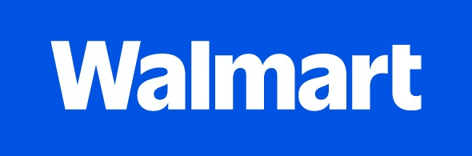

Russell Dudek
Technology Operations and AI Portfolio Leader
Pittsburgh, Pennsylvania | 412.287.8640
russelldudek@gmail.com | linkedin.com/in/russelldudek
https://russelldudek.github.io/Walmart/
russelldudek@gmail.com | linkedin.com/in/russelldudek
https://russelldudek.github.io/Walmart/

Role-aligned application for Global Governance Digital StrategyTechnology Operations and AI Portfolio Leader
Operator-technologist who turns emerging technology into governed, adopted, measurable work across complex operating environments.
Senior operations and technology leader with direct experience building AI-enabled workflows, operating mechanisms, quality systems, portfolio logic, and cross-functional transformation. Combines strategic framing with hands-on workflow design, human-in-the-loop governance, performance visibility, and execution discipline.
Selected leadership experience
Vape-Jet - Director of Operations2025-present
- Leads AI-first operating transformation across production, purchasing, quality, customer success, support, engineering issue flow, ERP/Odoo, Jira, HubSpot, Slack, telemetry, and AI-assisted workflows.
- Connects factory, field, customer, and machine-fleet signals into prioritized work, earlier risk detection, cleaner handoffs, dashboards, standard work, training, and accountability.
- Works in a software-enabled robotics and machine-vision environment with approximately 1,000 fielded robots informing support and operating feedback loops.
DudeWorth - Founder / AI and Automation Advisor2017-present
- Develops AI-readiness and opportunity frameworks spanning value, feasibility, data readiness, governance, adoption burden, reuse, and time-to-value.
- Designs agentic workflow patterns using structured context, retrieval, AI agents, human judgment, escalation, decision records, evaluation, and governance rails.
- Advises on AI-enabled operations, logistics technology, automation, robotics, network analysis, and workflow design.
Amazon - Operations Management / Site Leader2014-2018
- Led launch and execution for Amazon Prime Pittsburgh in a 24/7 customer-backward environment supporting approximately five million second-day orders annually.
- Built leadership routines, labor planning, throughput visibility, escalation paths, standard work, and operating mechanisms.
- Served on the Amazon Prime Now launch team with Whole Foods and contributed to logistics innovation through Prime Air research and Amazon Flex geolocation concepts.
Russell DudekPittsburgh, Pennsylvania | 412.287.8640 | russelldudek@gmail.com | linkedin.com/in/russelldudek
https://russelldudek.github.io/Walmart/
https://russelldudek.github.io/Walmart/
Additional leadership experience
Compunetics - Director of Operations and Engineering Management2000-2013
- Progressed through R&D program management, production management, strategic acquisition, operations management, and director-level leadership.
- Led engineering, manufacturing, quality, customer delivery, and complex technical programs in advanced electronics and high-reliability environments.
- Built quality systems, standard work, root-cause practices, performance measures, and process controls.
- Collaborated with high-consequence customers and partners including DoD, CERN, Intel, and AMD; published industry articles, delivered technical talks, and participated in the HyperTransport Consortium.
Cardinal Building Products - Regional Director2021-2023
- Built the company's first remote regional operation.
- Modernized distributed customer, CRM, commercial, fulfillment, logistics, digital marketing, SEO, and online-buying workflows.
- Advanced AI-enhanced transportation-management and route-planning concepts.
ZeusVu - Chief Pilot, Autonomous Systems and Aerial Data Operations2018-2022
- Led regulated drone operations across medical, energy, logistics, real-estate, and restricted-airspace contexts with a 100% safety record and no FAA incidents.
- Developed TensorFlow-based concepts for automated aerial inventory and computer-vision-enabled field intelligence.
- Designed medical drone delivery and chain-of-custody concepts connecting technology, risk, stakeholders, and governed execution.
Enviro Social Capital - Chairman of the Board2014-2017
- Co-founded and led a public-private impact initiative focused on sustainable infrastructure, green finance, and civic transformation.
- Helped shape and evaluate a $200 million Social Impact Bond feasibility concept for Pittsburgh sewage and green-infrastructure improvement.
IEEE - CMPT and EDS Pittsburgh Chapter Chair2012-2016
- Led regional technology programming connecting industry, academia, STEM outreach, electronics, manufacturing, and emerging technology.
- Organized conferences, seminars, business tours, and technical programming.